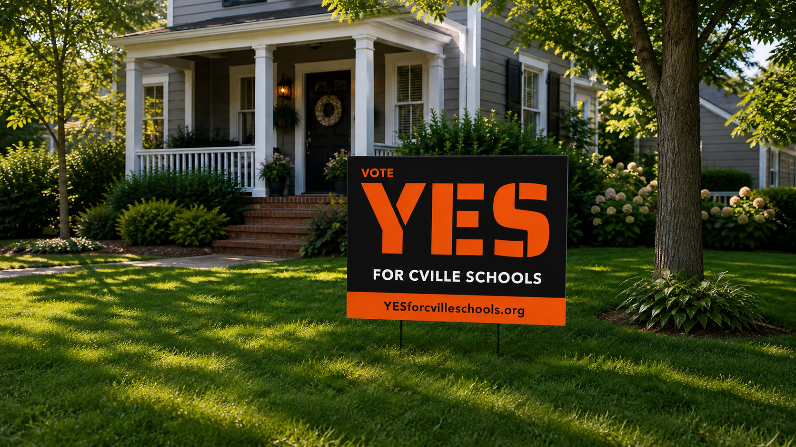

Early Learning Center
Help bring the new Charlottesville Early Learning Center over the finish line.
for
cville
schools
Charlottesville voters have the opportunity to create a dedicated, long-term source of funding for safer, stronger, more modern city schools.
Modernize
aging facilities
Safer, healthier
learning spaces
Support
every student
Stronger schools,
stronger community
What this investment makes possible
The new Charlottesville Middle School shows what sustained public investment can make possible. This proposal would help ensure that other schools do not have to wait years for the upgrades they deserve.
Funding would be dedicated solely to upgrading aging school infrastructure and improving the places where Charlottesville students learn.

Across Charlottesville
Help bring the new Charlottesville Early Learning Center over the finish line.
Upgrade classrooms, restrooms, and spaces for student collaboration.
Improve the cafeteria, kitchen, and media center.
Make needed cafeteria and auditorium upgrades.
A dedicated funding source
The proposal would create a new source of funding dedicated solely to school infrastructure. It would not apply to groceries, essential personal hygiene products, or prescription medications.
Questions and answers
Charlottesville voters will consider whether to approve a 1% local sales tax dedicated to funding school construction and modernization.
The proposal is expected to appear on the November 2, 2026 ballot.
The working proposal describes a dedicated 20-year funding source.
No. The working proposal states that groceries, essential personal hygiene products, and prescription medications would be exempt.